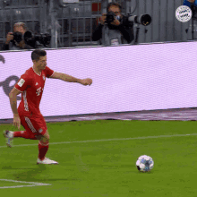
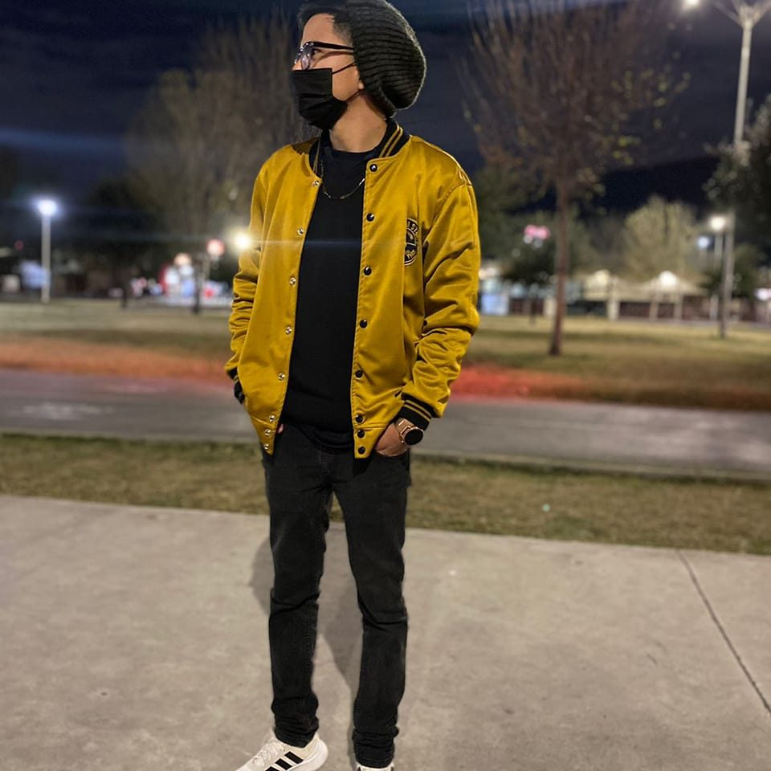
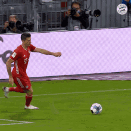
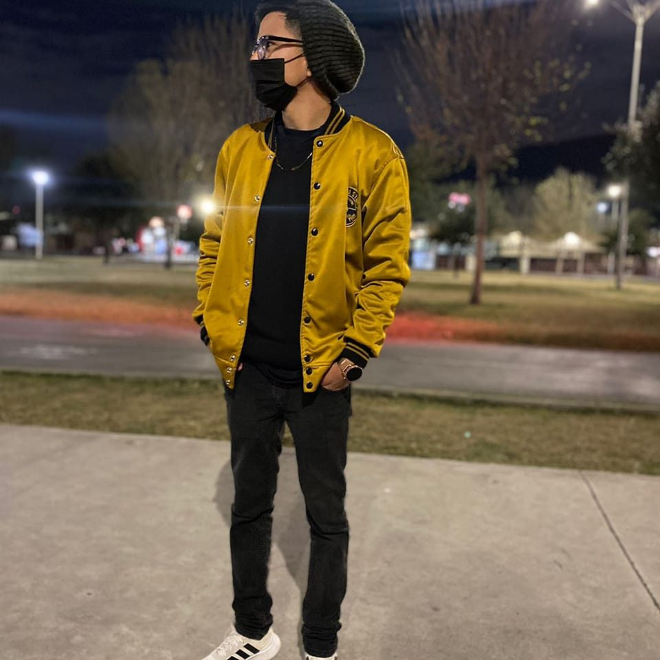
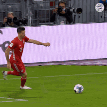
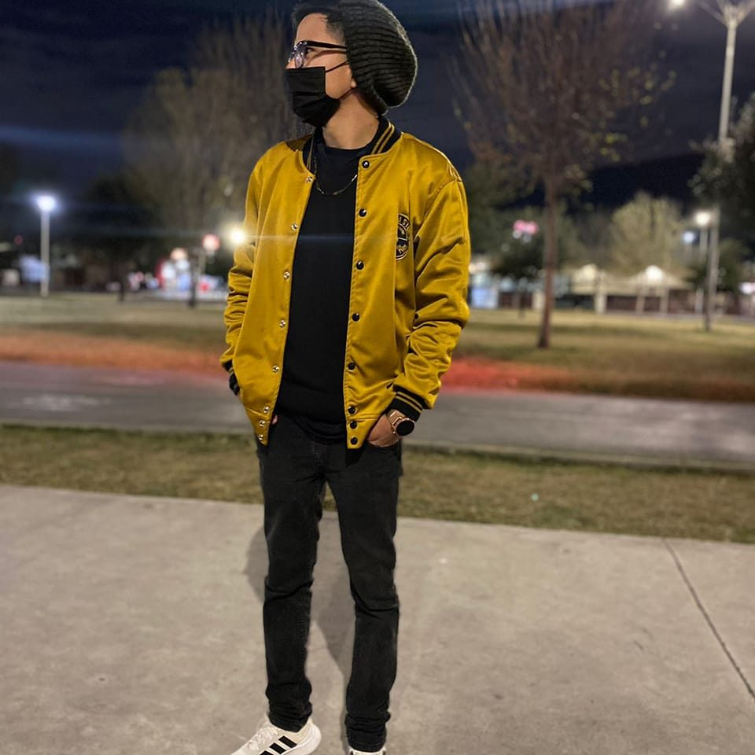
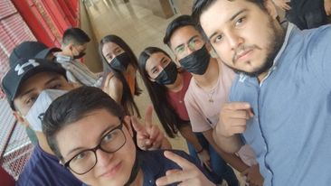

Mi nombre completo es Juan De Dios Sanchez Juarez. Nací un 30 de julio del 2001 en Monterrey, Nuevo León. Actualmente tengo 21 años, y me gusta mucho ver la serie de peaky blinders y jugar futbol
 



Mi nombre completo es Juan De Dios Sanchez Juarez. Nací un 30 de julio del 2001 en Monterrey, Nuevo León. Actualmente tengo 21 años, y me gusta mucho ver la serie de peaky blinders y jugar futbol


Como anteriormente lo mencione mi nombre es juan de dios sanchez juarez, soy una persona que le gusta mucho aprender, que siempre persigue sus metas, y le gusta conocer siempre nuevos lenguajes de programacion, muchos me conocen como juanito en el salon otros por mi nombre juan, y actualmente espero adquirir mucho conocimiento de esta materia.

Mis amistades de la universidad se han vuelto casi una familia para mi. Los conoci desde primer semestre y a lo largo de la carrera los he conocido a todos, y son unas increibles personas siempre nos hemos apoyado para algun proyecto y tarea, hemos salido a comer, a pasear o simplemente a platicar, estas amistades hacen de la universidad un lugar mas padre e increible. En esta foto mostrare algunas de mis amistades de las que hablo
